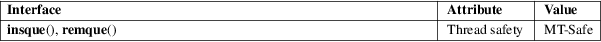

insque, remque − insert/remove an item from a queue
Standard C library (libc, −lc)
#include <search.h>
void
insque(void *elem, void *prev);
void remque(void *elem);
Feature Test Macro Requirements for glibc (see feature_test_macros(7)):
insque(),
remque():
_XOPEN_SOURCE >= 500
|| /* glibc >= 2.19: */ _DEFAULT_SOURCE
|| /* glibc <= 2.19: */ _SVID_SOURCE
The insque() and remque() functions manipulate doubly linked lists. Each element in the list is a structure of which the first two elements are a forward and a backward pointer. The linked list may be linear (i.e., NULL forward pointer at the end of the list and NULL backward pointer at the start of the list) or circular.
The insque() function inserts the element pointed to by elem immediately after the element pointed to by prev.
If the list is linear, then the call insque(elem, NULL) can be used to insert the initial list element, and the call sets the forward and backward pointers of elem to NULL.
If the list is circular, the caller should ensure that the forward and backward pointers of the first element are initialized to point to that element, and the prev argument of the insque() call should also point to the element.
The remque() function removes the element pointed to by elem from the doubly linked list.
For an explanation of the terms used in this section, see attributes(7).

On ancient systems, the arguments of these functions were of type struct qelem *, defined as:
struct qelem {
struct qelem *q_forw;
struct qelem *q_back;
char q_data[1];
};
This is still what you will get if _GNU_SOURCE is defined before including <search.h>.
The location of the prototypes for these functions differs among several versions of UNIX. The above is the POSIX version. Some systems place them in <string.h>.
POSIX.1-2008.
POSIX.1-2001.
In glibc 2.4 and earlier, it was not possible to specify prev as NULL. Consequently, to build a linear list, the caller had to build a list using an initial call that contained the first two elements of the list, with the forward and backward pointers in each element suitably initialized.
The program below demonstrates the use of insque(). Here is an example run of the program:
$ ./a.out
−c a b c
Traversing completed list:
a
b
c
That was a circular list
Program
source
#include <search.h>
#include <stdio.h>
#include <stdlib.h>
#include <unistd.h>
struct element
{
struct element *forward;
struct element *backward;
char *name;
};
static struct
element *
new_element(void)
{
struct element *e;
e =
malloc(sizeof(*e));
if (e == NULL) {
fprintf(stderr, "malloc() failed\n");
exit(EXIT_FAILURE);
}
return e;
}
int
main(int argc, char *argv[])
{
struct element *first, *elem, *prev;
int circular, opt, errfnd;
/* The
"−c" command−line option can be used
to specify that the
list is circular. */
errfnd = 0;
circular = 0;
while ((opt = getopt(argc, argv, "c")) !=
−1) {
switch (opt) {
case 'c':
circular = 1;
break;
default:
errfnd = 1;
break;
}
}
if (errfnd ||
optind >= argc) {
fprintf(stderr, "Usage: %s [−c]
string...\n", argv[0]);
exit(EXIT_FAILURE);
}
/* Create first element and place it in the linked list. */
elem =
new_element();
first = elem;
elem−>name = argv[optind];
if (circular) {
elem−>forward = elem;
elem−>backward = elem;
insque(elem, elem);
} else {
insque(elem, NULL);
}
/* Add remaining command−line arguments as list elements. */
while (++optind
< argc) {
prev = elem;
elem =
new_element();
elem−>name = argv[optind];
insque(elem, prev);
}
/* Traverse the list from the start, printing element names. */
printf("Traversing
completed list:\n");
elem = first;
do {
printf(" %s\n", elem−>name);
elem = elem−>forward;
} while (elem != NULL && elem != first);
if (elem ==
first)
printf("That was a circular list\n");
exit(EXIT_SUCCESS);
}
queue(7)